ユーザーマニュアル
コマンドラインのユーザーマニュアルは
こちらからご利用いただけます
DeepSkyStackerに関して何か問題が発生した場合は、groups.ioでホストされているDeepSkyStackerメーリングリストに報告してください。
https://groups.io/g/DeepSkyStacker
はじめに
クイックスタート
登録およびスタッキングタブ
バッチスタッキング
処理タブ
スターマスクの作成
画像リスト
画像プレビュー (星と彗星の編集)
RAWおよびFITS DDP設定
はじめに
この短いマニュアルの目的は、DeepSkyStackerの機能と原理を説明することです。
|
DeepSkyStackerのユーザーインターフェースは非常にシンプルで直感的であり、すべての主要な機能とコマンドを簡単に利用できます。
ユーザーインターフェースは2つの領域に分かれています。
左側には、すべてのコマンドや機能にアクセスできる一連のタブがあります。
右側には、現在のタブに応じて設定および表示を行うための画面があります。
現在のタブを変更するには、タブ内の任意の場所をクリックします。
|
天体写真の初心者で、ライト、ダーク、フラット、バイアスフレームとは何か、またそれらをどのように作成するのか疑問に思っている場合は、こちらに簡単な説明があります。
|
|
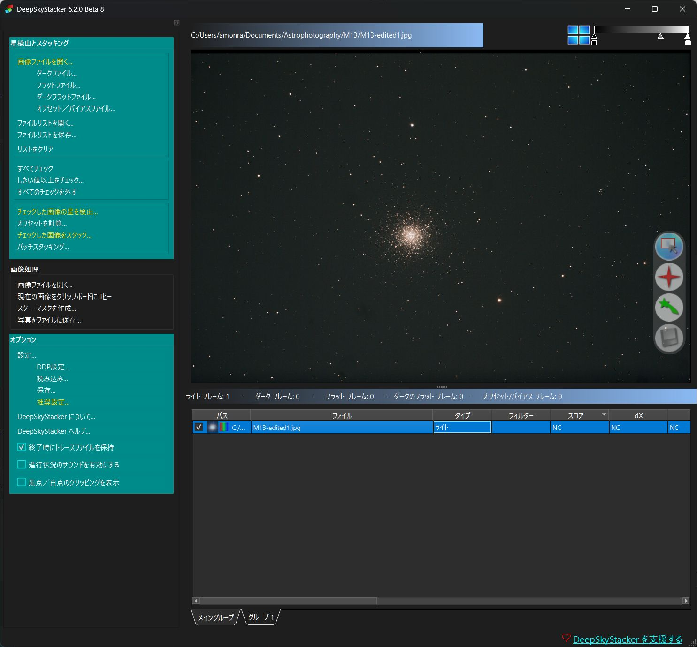 |
クイックスタート
忙しい夜が明けて、すべての画像（ライト、ダーク、オフセット、フラット）をPCにダウンロードしたばかりの状態を想定しています。
最初のステップは、すべての画像（種類に応じて）をリストに追加することです。
これを行うには、左側の領域のコマンドを使用します。
- 画像ファイルの追加
- ダークファイルの追加
- フラットファイルの追加
- オフセット/バイアスファイルの追加
- ダークフラットファイルの追加
次に、登録プロセスを開始します。登録プロセス後にスタッキングプロセスに残したい画像のパーセンテージを入力した後、「登録後にスタッキング」ボックスにチェックを入れます。
RAWファイルを使用している場合（強く推奨されます）、Raw DDP設定を確認し、登録プロセスを開始するだけです。
これで、一晩寝た後に処理タブで最初の結果を確認できるとわかっている状態で眠りにつくことができます。
スタッキングプロセス後にPCがクラッシュした場合でも、結果は特殊なファイルである
AutoSave.tifに自動的に保存されることに注意してください。
登録およびスタッキングタブ
登録およびスタッキングタブには、登録およびスタッキングプロセスに関連するすべてのコマンドと機能が含まれています。
このタブから、各種類のフレーム（ライト、ダーク、フラット、オフセット/バイアス）をリストに追加し、ファイルリストの保存と復元、画像のプレビュー、および登録やスタッキングプロセスの開始を行うことができます。
|
ファイルエクスプローラーからファイルをドラッグ＆ドロップするだけで、リストにファイルを追加することができます。
その後、ファイルがリストに追加される前にファイルの種類を尋ねられます。 |
右側の領域には、画像リストと画像プレビューが含まれています。
画像リストの下部にはタブの行があり、各ファイルグループにアクセスできます。グループタブの1つをクリックすると、そのグループのファイルがリストに表示されます。
ファイルグループの詳細については、こちらの技術詳細を参照してください。
上部と右側のスライダーを使用して、プレビュー画像のガンマを変更できます。これは暗い対象物を表示するのに役立ちます。
もちろん、これはプレビューのトリックに過ぎないため、実際の画像に変更は加えられません。
|
維持されるライトフレームの割合を指定することで、登録プロセスの後に自動的にスタッキングプロセスを開始することができます。登録プロセスによって計算されたスコアに基づいて、最も優れた画像がスタックされます。 |
|
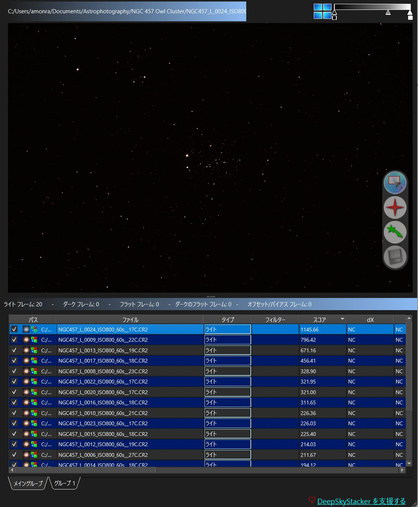 |
「オフセットの計算」機能を使用して、スタッキングプロセスを開始せずに画像間のオフセットと回転角度を計算できます。計算されると、画像リストのdX、dY、および角度の列に計算されたオフセットと回転角度が入力されます。
注： オフセットと回転角度はスタッキングプロセスの直前に自動的に計算されるため、スタッキングプロセスの前に手動でオフセットを計算する必要はありません。
「しきい値を超えるものをチェック...」を使用して、スコアが指定されたしきい値以上のすべての画像をチェックできます。
|
スタッキングプロセスの前に、さまざまな手順を要約した画面が表示されます。
ライトフレームは、ISO感度と露出時間を使用して、ダークフレームと自動的に関連付けられることに注意することが重要です。
フラットフレームとオフセット/バイアスフレームは、ISO感度のみに基づいて自動的に関連付けられます。
いずれの場合も、最も一致するフレームが提案され、ISO感度や露出時間が一致しない場合は警告が発せられます。
|
ファイルのコンテキストメニューを使用することで、ISO感度と露出時間を一時的に「強制」することが可能です。 |
また、このダイアログから、リンクを直接クリックするか「スタッキングパラメータ」ボタンをクリックして、各種類の画像のスタッキング方法を変更することもできます。
|
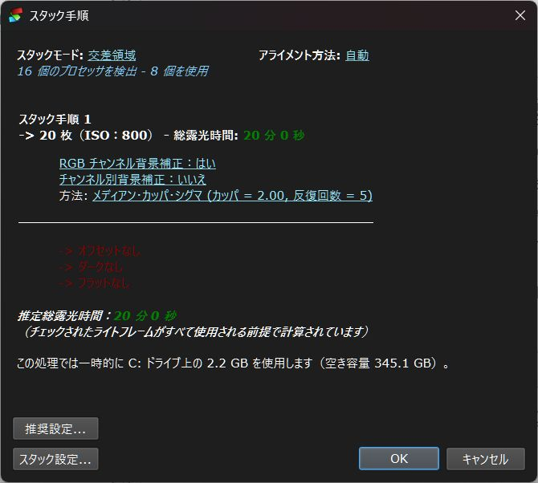 |
その後新しいダイアログが開き、そこからスタッキングプロセスに必要な一時ファイルが作成されるフォルダや、スタッキングプロセスを制御するすべての設定を変更できます。 最初のタブはスタッキングモードの設定に使用され、カスタム矩形を使用するオプションなどが含まれています。
すべてのモードでオフセットは基準フレームから計算されるため、真のモザイクモードではなく擬似的なモザイクであることに注意してください。
ここでは、スタッキング時にDrizzleオプションを選択することもできます。
|
Drizzleオプションは、画像を4倍または9倍大きくします。
すでに大きなDSLR画像の場合、非常に大きな画像が生成される可能性があり、DeepSkyStackerがそれらを処理するために多くのメモリとディスク容量を必要とする場合があります。 |
|
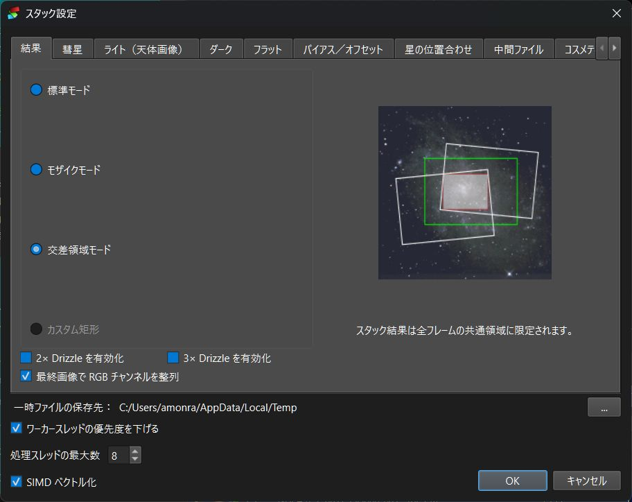 |
|
その他のライト、ダーク、フラット、バイアスタブは、各種類のフレームのスタッキング方法を変更したり、ライトフレームの背景キャリブレーションオプションや、ダークフレーム用のホットピクセルの自動検出と除去、および不良列の検出と除去を有効にしたりするために使用されます。 |
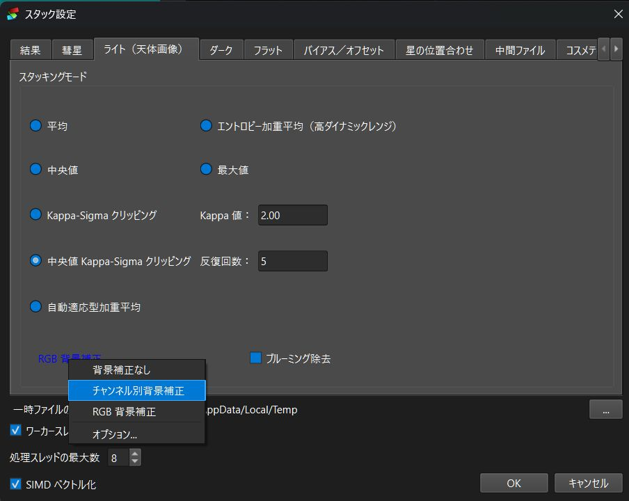 |
アライメントタブは、ライトフレームの位置合わせに使用されるアライメント方法を変更するために使用できます。
バイリニア、ビスウェアード、バイキュービック変換を選択するか、DeepSkyStackerに使用可能な星の数に基づいて最適な変換を選択させることができます。 |
 |
|
このタブは、中間ファイルの作成を制御するために使用されます。
中間画像を含むファイルの作成には、2つのオプションを使用できます。
最初のオプションを使用して、各ライトフレームのキャリブレーション済み画像を含むファイルを作成できます。
2番目のオプションを使用して、各ライトフレームのキャリブレーション済みおよび登録済みの画像を含むファイルを作成できます。
作成されたファイルは一致するライトフレームの名前と場所を持ち、キャリブレーション済み画像の場合は.cal.tifまたは.cal.fts拡張子が付き、登録およびキャリブレーション済み画像の場合は.reg.tifまたは.reg.fts拡張子が付きます。
ファイルは常に非圧縮のTIFFまたはFITSファイルであり、ライトフレームのビット深度に応じてモノクロまたはカラー、8、16、または32ビットになります。
|
これらのオプションのいずれかにチェックを入れる場合は、作成されたすべてのファイルを保存するのに十分なハードディスクの空き容量があることを確認してください。 |
|
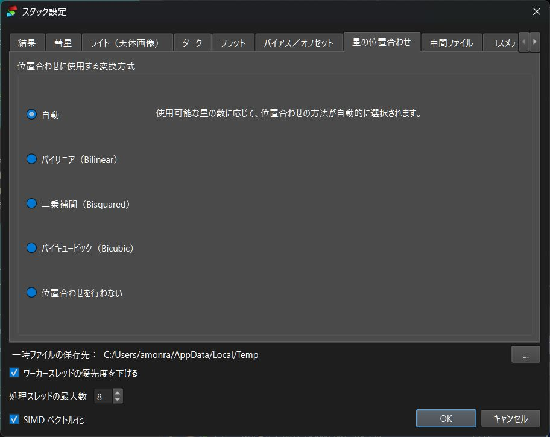
|
|
この
タブは、スタッキング前にキャリブレーションされた画像をクリーンアップする方法を制御するためのものです。
目的は、キャリブレーション後に残っているホットピクセルやコールドピクセルを検出し、クリーンアップすることです。
これらのオプションをチェックすると、結果の画像が大幅に変更される可能性があるため、注意して使用してください。
コスメティッククリーニングの動作を定義するには、2つのパラメータが必要です。
最初のパラメータは、ホット/コールドピクセルの検出と修正に使用されるフィルタのサイズです。フィルタが大きいほど、処理時間が長くなり、結果の画像はより滑らかになります。
2番目のパラメータは、それ以下では修正が行われない（ピクセル値が同じままになる）しきい値です。
しきい値が低いほど、より多くの修正が行われます。
最後のオプションをチェックすると、各ライトフレームのクリーンアップされたピクセルを示す画像を作成できます。
この画像では、クリーンアップされたホットピクセルは白、クリーンアップされたコールドピクセルは濃い灰色、その他のすべてのピクセルは薄い灰色になります。
作成されたファイルは、前のタブで定義されたように、一致するライトフレームの名前と場所を持ち、.cosmetic.tifまたは.cosmetic.fts拡張子が付きます。
|
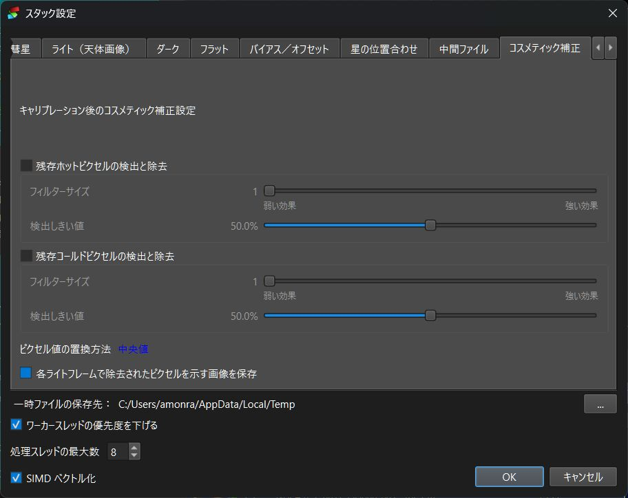 |
|
コメットタブは、少なくとも2つのライトフレーム（基準ライトフレームを含む）に彗星が登録されている場合にのみ使用できます。
この場合、コメットタブは3つの利用可能なモードからコメットスタッキングモードを選択するために使用されます。
コメットスタッキングの使用方法については、技術詳細のコメットスタッキングトピックを参照してください。 |
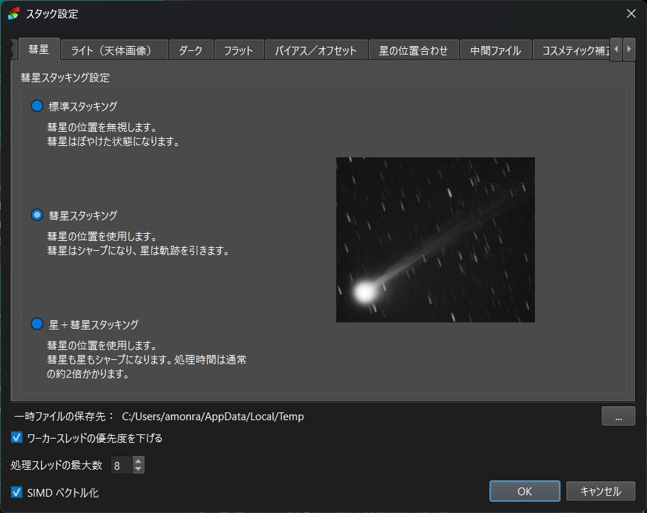 |
スタッキングプロセスの後、結果の画像は基準ライトフレームのフォルダ内に作成されるAutoSave.tifファイルに保存されます。
フォルダにすでにAutosave.tifファイルが存在する場合は、Autosave001.tif（002、003、...）が作成されます。
バッチスタッキング
バッチスタッキングダイアログは、複数のスタックから結果画像を作成するために使用されます。
|
たとえば、各リストをロードしてそれぞれのスタッキングプロセスを手動で開始することなく、赤、緑、青、輝度の画像から結果画像を作成するために使用できます。
もちろん、既存のリストをスタックするためにも使用できます。
「ファイルリストの保存」コマンドによって以前に作成されたファイルリストをリストに追加するだけです。
チェックされた各ファイルリストが処理されます。
スタッキングプロセスの終了時に、処理された各ファイルリストのリスト名が出力ファイル名に置き換わります。
注記:
|
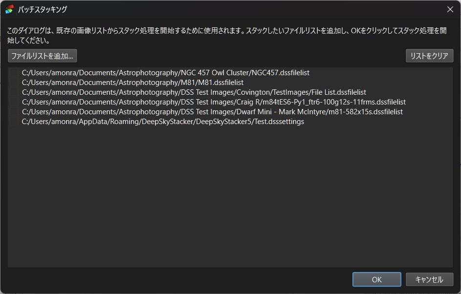 |
処理タブ
処理タブには、ポスト処理に関連するコマンドと機能が含まれています。
|
DeepSkyStackerでは、スタッキング処理の結果を視覚化するために、画像の単純な伸縮とカラーバランス調整のみが可能です。ただし、背景にグラデーションがない場合は、ここに用意されているツールだけでも十分満足のいく結果が得られる可能性があります。
複雑な後処理は、専用のソフトウェアで行う必要があります。
処理タブには、RGBヒストグラムのプレビュー、逆双曲線サイズ（ASinH）による画像伸縮を適用するタブ、そしてカラーバランスを調整するタブがあります。
カラーバランスを調整する場合は、まず伸縮パラメータを調整して伸縮を適用し、次にカラーバランスタブに切り替えて調整を行い、適用してください。
|
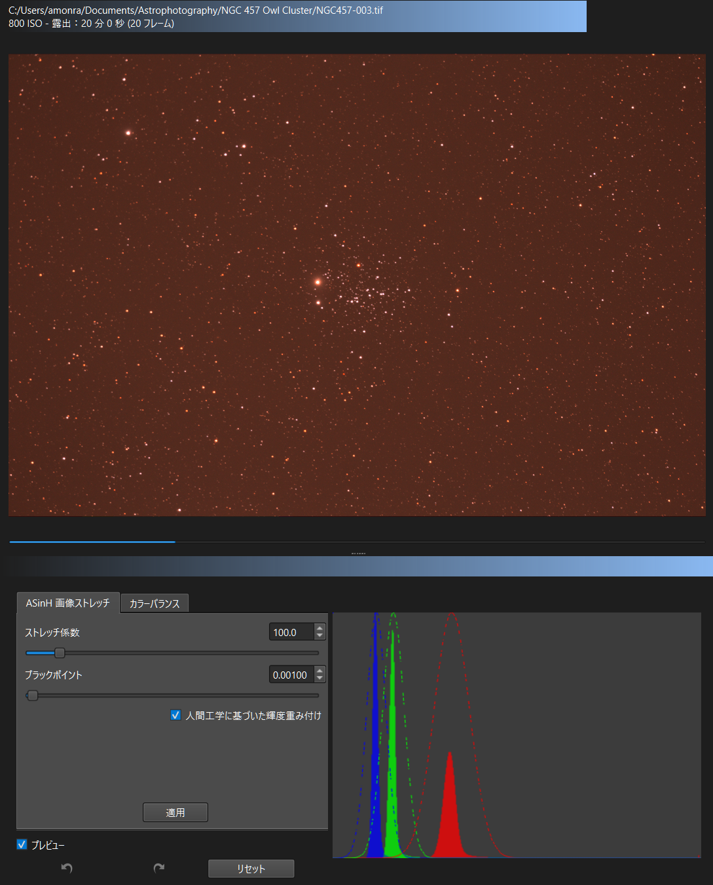 |
ASinH変換またはストレッチ
|
ASinH変換は画像の暗い領域を強調します。パラメータはストレッチ係数（またはベータ）、ブラックポイントの値、および「人間の重み付け輝度」を使用するかどうかです。
モノクロ画像の場合、ピクセル値は次の関数を使用して変更されます。
| pixel = |
(original - blackpoint) × asinh(original × stretch)
|
|
original × asinh(stretch)
|
【各項目の解説】
◆ pixel：変換後のピクセル値
◆ original：変換前の元のピクセル値
◆ blackpoint：ブラックポイントの値
◆ stretch：ストレッチ係数
◆ asinh：逆双曲線正弦関数
カラー画像の場合、関数は次のようになります：
| pixel = |
(original - blackpoint) × asinh(rgb_original × stretch)
|
|
rgb_original × asinh(stretch)
|
ストレッチ係数（ベータとも呼ばれます）は、0.0から1000.0までの値を取ることができます。値を大きくすると、より高い画像ストレッチが適用されます。
「ブラックポイント」値の範囲は[0.00000, 0.20000]です。0.2という値は、ブラックポイントが最大可能ADU値の20%に設定されていることを意味します。ブラックポイント未満の値は黒として扱われます。
rgb_originalは3つのカラーチャネルの平均であるため、1つまたは2つのチャネル値がrgb_originalよりも大きくなり、クリッピングが発生する可能性があります。この問題を緩和するために、RGBブレンドアルゴリズム（チャネルに適用される「ゲイン」を調整するためにGHSAstroツールの開発者によって開発されました）を使用して、そのようなクリッピングが発生しないようにします。
人間加重輝度オプションがチェックされていない場合、rgb_originalは3つのピクセル値の平均になります。チェックされている場合、重みは赤の値が0.2126、緑の値が0.7152、青の値が0.0722に変更され、人間の知覚的な色バランスに近い結果が得られます。
プレビューチェックボックスがチェックされている場合（デフォルト設定）、パラメータを調整すると（スピンボックスフィールドを直接編集するか、スピンボックスまたはスライダを選択してPage-UpおよびPage-Downキーを使用して粗い変更を行うか、カーソル上下キーを使用して細かい変更を行います）、表示される画像とヒストグラムがパラメータの変更を反映して変化します。ただし、実際に変更を適用するには、適用ボタンを押す必要があります。
ストレッチは「乗算」であることに注意してください。したがって、200.0のストレッチを適用し、次に10.0のストレッチを適用した場合、実質的な画像ストレッチは2000.0になります。 |
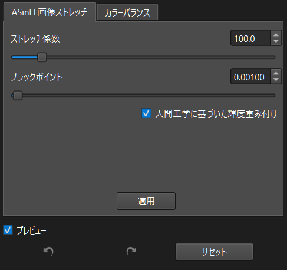 |
RGB ヒストグラム
|
RGBヒストグラムを使用すると、画像内の各チャネル（R、G、B）のピクセル値の分布を視覚化できます。
さらに、各チャネルのガウス曲線がヒストグラムデータの上に描画されます。
カラーバランス調整タブ（下記参照）を使用して画像のカラーバランスを調整でき、これによりヒストグラムが再描画されます。
|
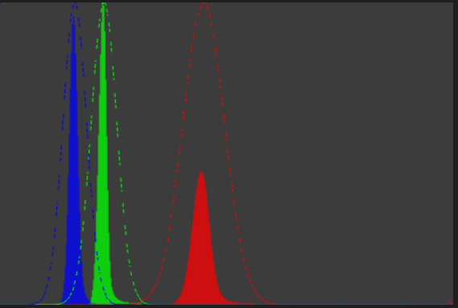 |
カラーバランス
調整
|
カラーバランス調整タブを使用すると、画像のカラーバランスを調整できます。この調整は、画像のストレッチを適用した後に実行してください。
プレビューチェックボックスがチェックされている場合（デフォルト設定）、パラメータを調整すると（適切なスライダーを選択し、Page-UpおよびPage-Downキーを使用して粗い変更を行うか、カーソルキーを使用して細かい変更を行います）、表示される画像とヒストグラムがカラーバランスの変更を反映して変化します。ただし、画像のストレッチと同様に、実際に変更を適用するには、適用ボタンを押す必要があります。 |
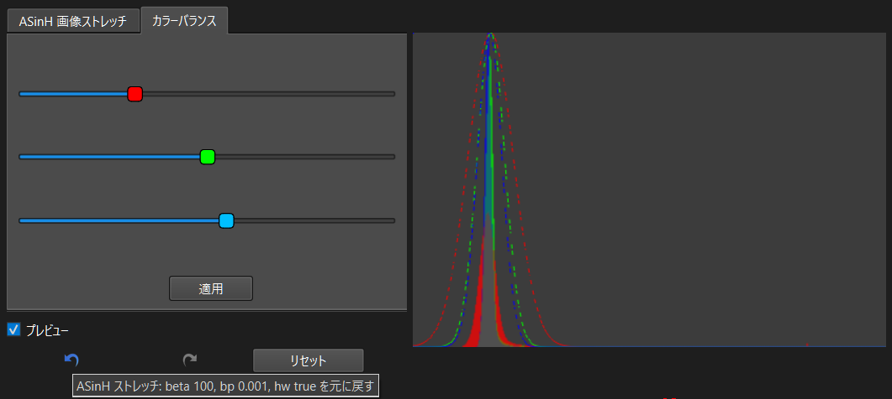 |
元に戻す/やり直し調整パラメータ
各タブの下部には一連のボタンが用意されています：
- 画像に最後の変更を適用する
- 最後に適用された変更を元に戻す
- 元に戻された最後の変更をやり直す
- すべての値をリセットする
画像の読み込み
DeepSkyStackerはTIFF画像（8、16、32ビット、モノクロまたはRGB）やFITS画像（8、16、32、64ビット、モノクロまたはRGB）を読み込むことができます。
スタッキング処理の終了時に、スタッキング処理で作成された画像が自動的に読み込まれます。
結果の画像の保存
|
DeepSkyStackerは、生成された画像を16ビットまたは32ビットのTIFFまたはFITSファイルとして2つの方法で保存できます：
|
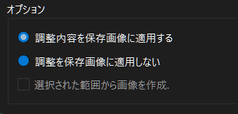 |
保存方法の詳細については、FAQをお読みください。
スターマスクの作成
スターマスクの使用は、後処理において星と画像のその他の部分に異なる処理技術を適用する上で、しばしば非常に役立ちます。
スターマスクの作成機能は、後処理に使用する任意のソフトウェア（Photoshop、PixInsightなど）で後で使用できるさまざまなスターマスクを作成するために使用できます。
DeepSkyStackerはスターマスクファイルを作成するだけです。ファイルは一切使用されません。
この機能は、実際の星の検出に基づいて、スターマスクファイルを素早く簡単に作成するためのツールと見なすことができます。
|
スターマスクとは何ですか？
スターマスクは合成グレースケール画像であり、十分に明るい各星が曲線に従って黒にフェードする丸い白い領域に置き換えられます。
スターマスクの例を右側に示します。
テキストにマウスを合わせると、画像またはスターマスクを見ることができます。 |
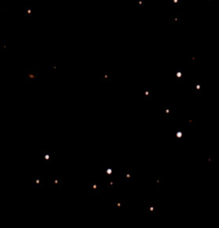
星空 |
|
スターマスクの作成
スターマスクを作成するには、処理タブで画像を読み込む必要があります。
次に、右側の「スターマスクの作成...」メニューをクリックすると、右側のダイアログが開きます。
そこから、マスク内の星の形、星の検出閾値、およびいくつかの他のパラメータを変更できます。
完了したら、OKボタンをクリックするだけで、スターマスクが保存されるファイル（TIFFまたはFITSファイル）の選択を求められます。
保存されたファイルは常にグレースケール16ビット画像です。DeepSkyStackerによって自動的には読み込まれません。
スターマスクは常にDeepSkyStackerで表示されている状態の画像から作成されるため、現在の調整が適用された状態で作成されます。 |
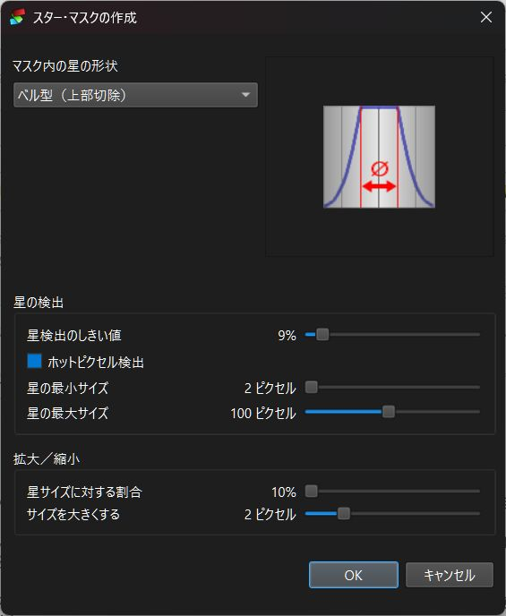 |
画像リスト
画像リストは、登録およびスタッキング処理に共通で、登録およびスタッキング処理で使用されるすべての画像が含まれています。
- ライトフレーム
- ダークフレーム
- フラットフレーム
- バイアス/オフセットフレーム
チェックされた画像のみが、登録およびスタッキング処理で使用されます。
リストには次の列が含まれています：
| チェックボックス |
画像を使用する場合はチェック |
| パス |
画像ファイルへのパス |
| ファイル |
画像ファイルの名前 |
| 種類 |
画像の種類:
ライト
ダーク
フラット
ダークフラット
バイアス |
| スコア |
登録プロセスによって計算された画像スコア。
ダーク、フラット、バイアス/オフセットフレームの場合はN/A。
コンテキストメニューを使用してフレームを参照フレームとして選択した場合、スコアの前に (*) が付きます。 |
| dX |
スタッキングプロセス用に計算されたXオフセット（ピクセル単位） |
| dY |
スタッキングプロセス用に計算されたYオフセット（ピクセル単位） |
| 角度 |
スタッキングプロセス用に計算された回転角度（°単位） |
| 日付/時刻 |
ファイルの日付と時刻 |
| サイズ |
ピクセル単位の画像サイズ（幅×高さ） |
| CFA |
画像がColor Filter Array（CFA）から生成される場合は「Yes」。これは、Bayer行列を使用するすべてのRAW画像に該当します。 |
| ビット深度 |
画像の種類（グレースケールまたはRGB）と1チャンネルあたりのビット数。 |
| 情報 |
画像に関する追加情報（DSLR情報を含むRAW、TIFFなど） |
| ISO感度 |
画像のISO感度 |
| 露出時間 |
画像の露出時間 |
| FWHM |
FWHM：半値全幅（Full Width Half Maximum）値（ピクセル単位）
これは、検出されたすべての星の平均値です。 |
| #星 |
検出された星の数。
彗星の位置が設定されている場合、星の数の末尾に +(C) が追加されます。 |
| 背景の空 |
登録された画像の背景の明るさ（%） |
列のヘッダーをクリックすると、任意の列でリストを並べ替えることができます（もう一度クリックすると、並べ替え順序が反転します）。
列の順序や各列の幅を変更できます。変更内容はDeepSkyStackerを使用するたびに保存されます。列の幅と順序は、次回DeepSkyStackerを使用するときに再読み込みされます。
リストから画像を選択してプレビューできます。
選択した画像がRAWファイルの場合は、RAW DDP設定を使用してRAWファイルをデコードしてからプレビューします。
|
リスト内で複数のファイルを選択できます。
コンテキストメニュー（マウスの右ボタン）を使用して、スタックの参照フレームの手動選択、ファイルタイプの変更、ファイルのチェックやチェック解除、画像リストやビューからのファイルの削除、ファイルのプロパティの編集、リストの内容をクリップボードにコピー、またはディスクから完全に消去することができます。
|
チェックされていない参照フレームを選択した場合、その参照フレームがスタックされない場合でも、オフセットはその参照フレームから計算されます。 |
|
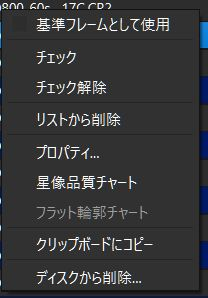
|
|
プロパティダイアログを使用して、画像の種類や、1つ以上の画像のISO感度および露出時間を一時的に（現在のセッション中のみ）変更できます。
ISO感度と露出時間を変更しても、実際のファイルに変更は加えられません。値は現在のセッション期間中のみメモリに保持されます。 |
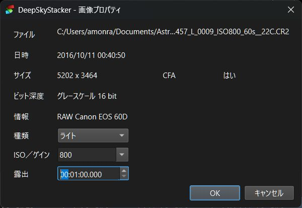 |
画像プレビュー
画像プレビューは、画像リスト（登録およびスタッキングタブ）から画像をすばやく表示したり、処理中の画像を表示したり（処理タブ）するために使用されます。
マウスを合わせてホイールを使用することで、ズームインおよびズームアウトできます。これがパンおよびズームを行う唯一の方法です。
星と彗星の編集
|
登録およびスタッキングタブでライトフレームが選択されている場合、次のことが可能です。
画像の右下のツールバーを使用して、上記のモードのいずれかを選択できます。
ツールバーの最後の項目は、変更の保存に使用されます。
|
彗星編集の注記：
DeepSkyStackerが彗星の中心を自動的に検出できない場合があります。
彗星を指定した位置に強制的に設定するには、彗星の中心を配置しながらShiftキーを押します。 | |
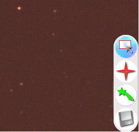 |
|
処理タブから使用する場合、画像プレビューを使用して、画像上に直接矩形を描画して画像の一部を選択できます。
この矩形は、調整をこの矩形にのみ適用するため、およびオプションとして画像の一部のみを保存するために使用されます。
矩形が定義されていない場合、調整は画像全体に適用されます。
いずれの場合も、画像をディスクに保存すると、調整は画像全体に適用されます。
|
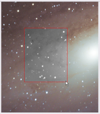 |
DDP（デジタル現像処理）設定
DDP設定ダイアログでは、画像ファイルを現像して画像に変換する際に使用されるすべてのパラメータにアクセスできます。
|
画像調整（または色調整）
パラメータは次のとおりです。
画像調整（または色調整）は、画像が読み込まれ、画像の種類（Raw、FITS、またはTIFF）に合わせて適切にスケーリングされた後、およびすべてのキャリブレーションフレームが適用された後に適用されます。 これらの調整を使用する場合、デフォルト値の1.0を超えて値を大きくしていくと、飽和状態になるピクセルがますます増加します。
明るさ（または輝度）の調整は、3つのチャンネルすべてに均等に適用されます。 赤および青のスケールファクターの値は、スケールファクターが明るさの値である緑色チャンネルに対する相対的な値です。
12ビットのTIFFまたはFITSファイルを16ビットにスケーリングしたい場合は、明るさの値を16に設定することで行うことができます。
これは、カメラのドキュメントに基づいて、FITS形式やCFA形式のTIFFファイルのチャンネルバランスを設定したい場合にも役立ちます。 |
 |
|
RAW ファイル
パラメータは次のとおりです：
デフォルトでは、DeepSkyStackerは「ホワイトバランス処理なし」または「カメラのホワイトバランスを使用」が選択されていない限り、昼光ホワイトバランスを使用します。 「ホワイトバランス処理なし」を選択した場合、ホワイトバランスのスケーリングは一切実行されません。これは、スタックした画像のポスト処理にStarToolsなどのソフトウェアを使用している場合に適しています。
その他のほとんどの場合は、昼光ホワイトバランスを使用することをお勧めします。
自動ホワイトバランスを使用するオプションはサポートされなくなりました。これは、フレームごとに異なる独自のホワイトバランスが適用され、ダークおよびフラットフレーム処理が乱れる原因となるためです。 ただし、どうしても自動ホワイトバランスを使用したい場合は、カメラを自動ホワイトバランスに設定し、「カメラのホワイトバランスを使用」を選択してください。
ホワイトバランス調整値は、LibRaw（Copyright © 2008-2019 LibRaw LLC）によってRAWファイルから抽出されます。 LibRawは、Dave Coffinによって作成されたRAWファイル用の元のDCrawデコーダに基づいています。
補間モードおよびベイヤーマトリクス最適化の具体的な動作に関する詳細情報は、技術的な詳細に記載されています。
|
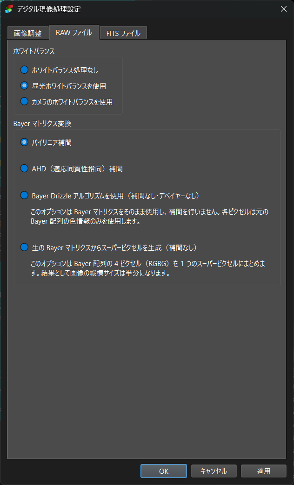 |
|
FITS ファイル
「Single plane 16 bit FITS files are from ...」チェックボックスがオンになっていない場合、DeepSkyStackerは、BAYERPAT、COLORTYP、MOSAIC（Meade DSIカラーカメラ用）などのFITSキーワードに基づいて、CFAマトリクスを自動的に検出しようとします。 FITSファイルにこれらのキーワードが含まれていない場合、またはファイルに誤ったパターンが指定されている場合は、チェックボックスをオンにして、以前のバージョンのDeepSkyStackerと同様に、使用するカメラやパターンを選択できます。
最初のステップとして、リストから画像の撮影に使用したDSLRまたはCCDカメラを選択します。これは、画像を白黒からカラー画像に変換するために使用される、正しいベイヤーフィルターパターンを使用するために必要です。
この設定は、以下の値の制御に使用されます。
- FITS DATAMINおよびDATAMAX値
- 補間モード
補間モードおよびベイヤーマトリクス最適化の具体的な動作に関する詳細情報は、技術的な詳細に記載されています。
|
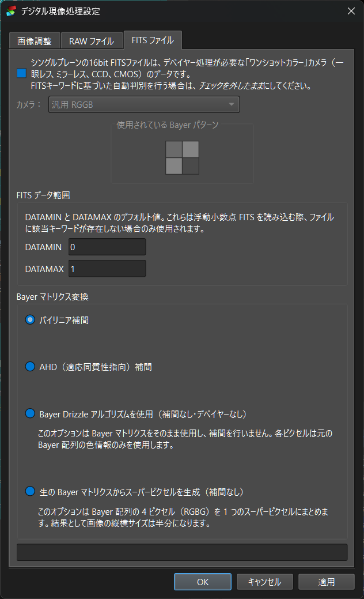 |